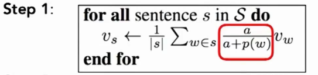

NLP
[TOC]
1.Introduction
Wordnet:
日语Wordnet使用
import sys
import sqlite3
from collections import namedtuple
if __name__ == '__main__':
conn = sqlite3.connect("wnjpn.db")
cur = conn.execute("select name from sqlite_master where type='table'") # 获取数据库存在的表格
for row in cur:
print(row)
cur = conn.execute("select * from word where lang='jpn' limit 10") # 获取日文单词
# print(cur.description)
for row in cur:
print(row)
cur = conn.execute("PRAGMA TABLE_INFO(word)") # 查看word表的列名
for row in cur:
print(row)
# 类似语检索
def SearchSimilarWords(word):
# 問い合わせしたい単語がWordnetに存在するか確認する
cur = conn.execute("select wordid from word where lemma='%s'" % word) #sql搜索指定词
word_id = 99999999 #temp 如果检索到相应单词的话会改变为一个正常的较小的值
for row in cur: #遍历搜索结果
word_id = row[0]
# Wordnetに存在する語であるかの判定
if word_id==99999999:
print("「%s」は、Wordnetに存在しない単語です。" % word)
return
else:
print("【「%s」の類似語を出力します】\n" % word)
# 入力された単語を含む概念を検索する
cur = conn.execute("select synset from sense where wordid='%s'" % word_id) #sense表包含着单词id和synset id
synsets = []
#遍历对sense的搜索结果，加入同义词集数组
for row in cur:
synsets.append(row[0])
# 概念に含まれる単語を検索して画面出力する
no = 1
#对每个同义词集进行遍历，输出
for synset in synsets:
cur1 = conn.execute("select name from synset where synset='%s'" % synset)
for row1 in cur1:
print("%sつめの概念 : %s" %(no, row1[0]))
cur2 = conn.execute("select def from synset_def where (synset='%s' and lang='jpn')" % synset)
sub_no = 1
for row2 in cur2:
print("意味%s : %s" %(sub_no, row2[0]))
sub_no += 1
cur3 = conn.execute("select wordid from sense where (synset='%s' and wordid!=%s)" % (synset,word_id))
sub_no = 1
for row3 in cur3:
target_word_id = row3[0]
cur3_1 = conn.execute("select lemma from word where wordid=%s" % target_word_id)
for row3_1 in cur3_1:
print("類義語%s : %s" % (sub_no, row3_1[0]))
sub_no += 1
print("\n")
no += 1
2.Word2Vec
WordNet的一些不足（如无法判断相似性等），引入了词向量
One-hot:热独码。仅有一个1的向量
在One-hot编码下。词汇独立。点乘为0
Distribution similarity(分布相似性)
靠上下文来表示一个词的含义
于是使用一个密集向量来表示一个词。可以预测文本其他词汇
2.1 Word2Vec
$w_{-t}$表示围绕在t中心词周围的其他单词(除t之外所以其他词汇),J为损失函数
Word2Vec是一个软件
2个算法
Skip-grams(SG):
定义一个窗口:radius m of every word
目标函数：
遍历每个词汇，大小为2m的窗口,左m右m个词,然后条件概率相乘
$\theta$是词的向量表示,也是唯一参数
为了方便运算,取对数，转换求积为求和，再取个平均1/T(相当归一化处理)
上面其实就是似然函数
要做的就是，通过当前的词向量来最小化似然函数
上面为softmax模型。也就是指数某值除于所有指数和.所以某词和当前中心词的点乘结果越大，softmax结果越大
o是输出单词，c是中心单词
$u_o$是索引为o的单词对应的向量 $v_c$是中心词汇对应的向量
Softmax是一种把数值转换成概率的方法
关注的是单词ID在窗口的位置,当关注的是句法之类的而不是单词本身意思时，考虑距离很有用
过程描述:
1.首先是一个中心词汇的one-hot向量$w_t$,然后和一个由所有中心词汇向量构成的矩阵W相乘，能够选出一列$v_c$,也就是中心词汇对应的词向量（完成了通过ont-hot->词向量的步骤)
2.然后和上下文的词汇表示矩阵相乘
3.softmax后可以预测某个位置出现哪个词,然后和实际情况比较
对于每个单词有一个d维的小向量
这个矩阵就是要优化的
第一部分求导为u_0
转换后
u_x是期望向量是所有上下文向量的平均，前面的是一个概率
优化方式

穿插的highlight paper:
1.计算句子向量

对每个句子执行上面那个。a是一个常数
CBOW:Continuous Bag of Words:
2个高效训练方式
Hierachical softmax
Negative sampling
Assignment 1:
Q1:Softmax:
1.
Prove:$softmax(x)=softmax(x+c)$,x is a vector and c is a constant
begin:
Let $x=(x_1,x_2,…,x_n)$
and then we know that $softmax(x)=(\frac{e^{x_1}}{\sum_j e^{x_j}},\frac{e^{x_2}}{\sum_j e^{x_j}},…,\frac{e^{x_n}}{\sum_j e^{x_j}})$
and $softmax(x+c)=(\frac{e^{x_1+c}}{\sum_j e^{x_j+c}},\frac{e^{x_2+c}}{\sum_j e^{x_j}},…,\frac{e^{x_n+c}}{\sum_j e^{x_j+c}})=\\=(\frac{e^{x_1}e^c}{e^c\sum_j e^{x_j}},\frac{e^{x_2}e^c}{e^c\sum_j e^{x_j}},…,\frac{e^{x_n}e^c}{e^c\sum_j e^{x_j}})=(\frac{e^{x_1}}{\sum_j e^{x_j}},\frac{e^{x_2}}{\sum_j e^{x_j}},…,\frac{e^{x_n}}{\sum_j e^{x_j}})=softmax(x)$
Then this question is solved
2.softmax
import numpy as np
def softmax_inrow(m):
# print(m)
rm=np.max(m,axis=1)
rm_r=rm.reshape(rm.shape[0],1)
#print(rm_r)
m1=m-rm_r
e1=np.exp(m1)
sum=np.sum(e1,axis=1)
sum=sum.reshape(sum.shape[0],1)
e1=e1/sum
#print(e1)
return e1
def softmax_incoloum(m):
# print(m)
rm = np.max(m, axis=0)
#rm_r = rm.reshape(rm.shape[0], 1)
#print(rm)
m1 = m - rm
#print(m1)
e1 = np.exp(m1)
sum = np.sum(e1, axis=0)
#sum = sum.reshape(sum.shape[0], 1)
e1 = e1 / sum
# print(e1)
return e1
N=input()
D=input()
matrix=np.random.rand(int(N),int(D))
print(softmax_incoloum(matrix))
#print(softmax2(matrix))
Q2:
2.1
As $\sigma(x)=\frac{1}{1+e^{-x}}$
$\sigma’(x)=\frac{e^{-x}}{(1+e^{-x})^2}\\e^{-x}=\frac{1}{\sigma(x)}-1$
So,$\sigma’(x)=\sigma(x)(\frac{1}{\sigma(x)}-1)=1-\sigma(x)$
3
词向量类似这样
进行奇异值分解降维
解决某些词过于频繁出现（如the)
Keyword
Wordnet
One-hot
Word Embeddings(词嵌入)
Distribution representation
Distribution similarity(分布相似性)
Skip-grams(SG)
normalization
cross-entropy(交叉熵)
softmax
bag-of-word(词袋)
backpropagation
SGD:Stochastic Gradient Descent
co-occurrence
Glove
L1 regularization
L2 regularization